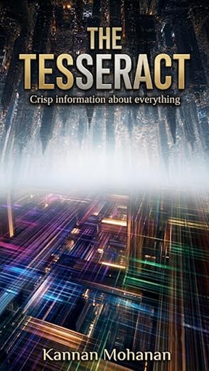
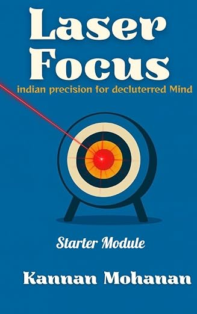
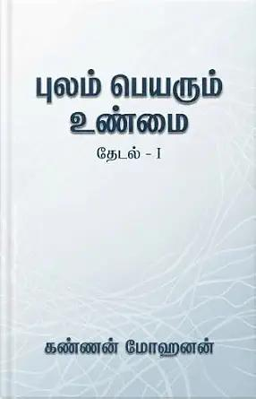

Pre-order · Kindle
The Tesseract: Crisp Information about everything
Clear, compact ideas on focus, energy and what matters in a world shaped by AI. Releases 20 June 2027.
Books by Kannan Mohanan
Clear, compact ideas on productivity, the art of prioritisation, focus, energy and what matters in a world overwhelmed by AI.

Clear, compact ideas on focus, energy and what matters in a world shaped by AI. Releases 20 June 2027.

Indian Precision (Ekagarta) for Decluttered Mind and Laser Sharp Focus
A practical guide to achieving laser sharp focus and learning how to cultivate it every day.
Available on Kindle · Free with Kindle Unlimited
View on AmazonA bold, honest look into the deeper layers of modern Indian society, from everyday moments to the silence around caste, language, gender and poverty.
Available on Kindle · Free with Kindle Unlimited
View on Amazon
A Tamil book on humanity, on what we fail to notice in our rushed lives, and on Indian, Dravidian and Tamil nationalism.
Available on Kindle · Free with Kindle Unlimited
View on Amazon
Kannan Mohanan is an engineer with more than a decade in instrumentation business and sales, working with multinationals and people across the Indian subcontinent. He is fascinated by how successful people handle their chaos and prioritise, and he wants to show readers what they are missing, for like Nero, we often forget what is important. His ideas come from tireless travel and countless conversations, from ISRO rocket scientists to ordinary folk. Through his books he is uncovering simple words such as necessary, dharma, focus, priority and meaningful.